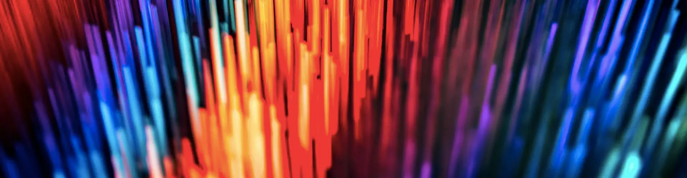

Diseñador UX/UI & Consultor de Marketing
Especialista en soluciones digitales visuales y branding estratégico para empresas B2B.
Sobre mí
Soy especialista en diseño con enfoque en la experiencia del usuario y marketing estratégico. Mi objetivo es crear diseño de interfaces que no solo sean funcionales, sino también intuitivas y memorables.
Actualmente desarrollo proyectos de alto impacto, aplicando principios de Gestalt y diseño visual para optimizar la comunicación de marca en el sector tecnológico e industrial.
Descargar CV
Mis herramientas
Proyecto Integrador UX/UI
Caso de Estudio:
Optimización de Interfaz para App Educativa


Justificación técnica: Seleccioné este proyecto porque demuestra la integración de mi experiencia en diseño visual con metodologías de UX centradas en resolver problemas reales de usabilidad.
Desafío Principal: Transformar una estructura de contenidos densa en una experiencia fluida, diseñando un flujo de lecciones que minimice distracciones.
Herramientas: Figma (Diseño y Prototipado), GitHub Pages (Despliegue) y Adobe Illustrator (Iconografía).
Impacto: Reducción proyectada del 25% en tiempo de búsqueda y mejora en la escalabilidad mediante bibliotecas de componentes.
Proyectos Destacados


Habilidades y Servicios
Diseño UX/UI
Figma, Prototipado, Wireframing

Adobe Suite
Illustrator, Photoshop, After Effects

Web Design
WordPress, HTML5, CSS3
Marketing
Branding, Consultoría B2B.
Hablemos de tu próximo proyecto
Conectemos
Estoy abierto a nuevas oportunidades freelance y colaboraciones estratégicas.